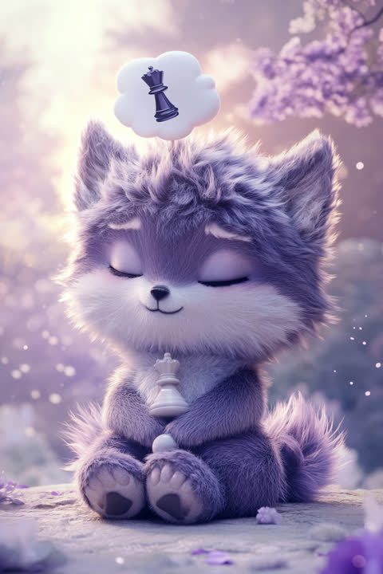

「頭の中はすでに勝ってる狼」タイプの五行は「金」の気質、ラッキーカラーは白金色。
雑談をしている間も、頭の中では3手先のシミュレーションが走っている人です。「なんとなく」で動くことがほぼなく、あらゆる行動の裏に自分なりの戦略があります。一度決めたら外野の声ではブレない芯の強さが持ち味ですが、その分「人に頼る」というコマンドだけ実装されていない疑惑も。非効率なものを見ると、頼まれてもいないのに改善案を組み立て始めてしまいます。占いの視点では、あなたは五行でいう「金」の気質を持つタイプ。無駄を削ぎ落として本質だけを残す、刃物のような鋭さを持つ属性です。ラッキーカラーは白金色。【意識するといいこと】たまには計画書を閉じて、誰かに丸ごと任せてみましょう。想定外の中にこそ、あなたの計画を超える発見があります。
恋に落ちても取り乱さない、けれど内側では静かに本気の炎が灯っている人です。「なんとなく付き合う」という選択肢がそもそも存在せず、好きになった相手とは何年も先を見据えて向き合います。駆け引きは非効率なので却下。感情表現は少なめでも、「この人だ」と決めた後のまっすぐさは、周りが驚くほどです。恋愛運の面では、「金」のエネルギーが、自分を曲げない恋ほど良縁につながることを暗示しています。開運アクションは、シルバーかゴールドのアクセサリーを身につけること。【意識するといいこと】頭の中の愛情は、相手には見えません。週に一度でいいので、言葉に翻訳して手渡しましょう。
「進捗どうなってるの?」と思われがちですが、水面下では誰よりも深く、正確に進んでいる人です。長期計画の設計が得意で、非効率な業務フローを見ると、頼まれてもいないのに頭の中で改善案が組み上がっていきます。感情論より構造で考えるためドライに見られることもありますが、狙いを定めた目標への到達率は驚異的です。仕事運の面では、「金」のエネルギーが、決断力と実行力を研ぎ澄ます暗示。開運アクションは、白か金色の文房具を使うこと。【意識するといいこと】完成してから浮上するのではなく、ときどき潜望鏡を上げて途中経過を見せると、周りの安心感が段違いです。
戦略コンサルタント、データサイエンティスト、研究職、プロダクトマネージャーなど、長期の構想力と論理的な設計力が問われる仕事に向いています。目先の作業より「仕組みごと良くする」役割で本領を発揮し、複雑な問題ほど燃えるタイプです。
伸びしろは「途中経過を見せることを戦略に組み込む」ことです。あなたは完成した答えだけを提示しがちですが、周りには思考の過程が見えないぶん、正しい提案でも「急に降ってきた話」として抵抗に遭います。結論の3歩手前で相談の形を取ると、同じ内容がすんなり通ることは多いもの。また、「人に頼る」を能力の問題ではなく資源配分の問題として捉え直すと、任せることへの抵抗が減ります。あなたの戦略眼は、一人で使うより人を巻き込んだ方が遠くまで届きます。
この診断では、性格・恋愛・仕事の3ブロックをそれぞれ独立して判定しています。3つとも同じINTJになるとは限りません——あなたの本当のタイプを、無料の3分診断で確かめてみませんか?